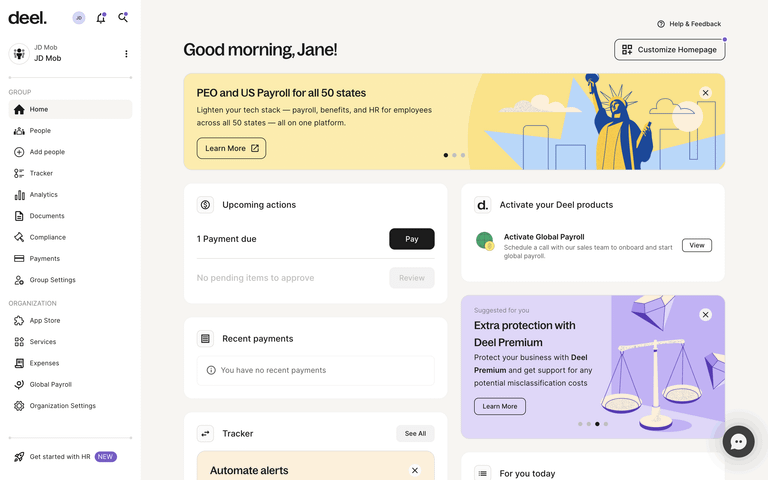
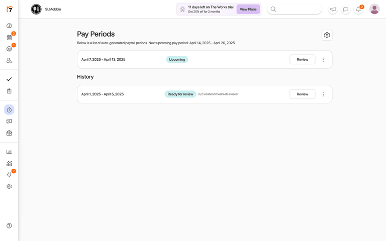
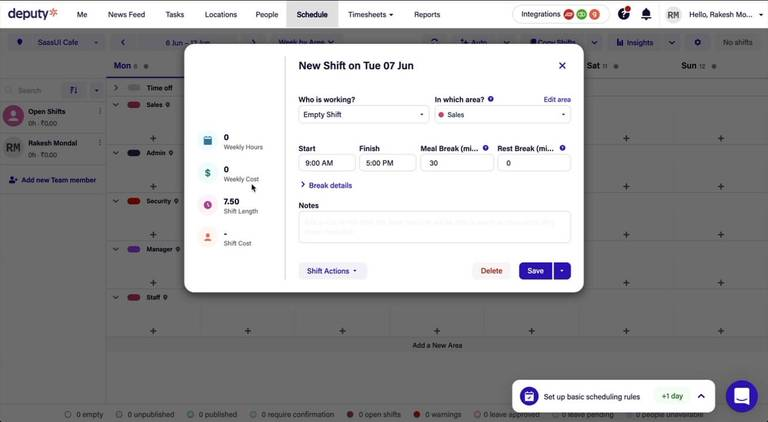

1. 준비 작업 통합
구성원 연결, 기록 가져오기, 직원 계정 연결을 데이터 및 직원 준비 한 영역으로 묶었습니다.
- 정상 상태에서는 접힘
- 미연결 직원이 있으면 개수 표시
- 오늘 할 일에서 직원 연결을 누르면 자동으로 펼침
Lazyweb design improve · 2026-08-17
현재 화면은 최초 설정, 매일의 마감, 사후 검증이 모두 같은 높이와 순서로 나열되어 운영자가 매번 전체 설명서를 읽는 느낌을 줍니다. 정상 상태에서는 “계산 → 경로 확인 → 지급”만 주 흐름으로 남기고, 데이터 가져오기·직원 연결과 소득 재계산은 접힌 보조 영역으로 유지하는 편이 적합합니다.
구성원 연결, 기록 가져오기, 직원 계정 연결을 데이터 및 직원 준비 한 영역으로 묶었습니다.
사업장 관리자의 반복 업무만 배분 계산·승인 → 경로별 마감 → 지급의 1–3단계로 다시 번호를 매겼습니다.
소득 상태 재계산은 정상적인 매일 단계가 아니므로 검증 및 이력에 접었습니다. 지급 기록 변경 또는 불일치가 있을 때만 사용합니다.
언어 전환 시 문서의 html lang과 datetime-local 입력의 lang을 함께 변경해 EN 화면에서 한국어 오전·오후가 남는 원인을 제거했습니다.


